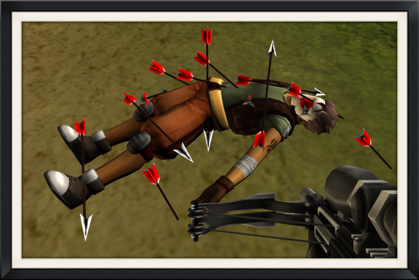

UPDATE - June 13th, 2016
The day has come to bid a final goodbye to a game that we've known and loved over the last 5+ years. As of today, we've shut down the servers and popped a bottle of champagne here at Cmune HQ with a final salute to our beloved UberStrike.
It's been quite a journey for us as developers making a game for you, our players. We would never have come this far if it hadn't been for the amazing support from this community and our millions of loyal players.
We're working on some awesome new games, and can't wait to show you what we've got in store. We hope they'll help fill some of the void left by UberStrike.
A huge thank you from Team Cmune, Shaun, Nad, Lvx3, Jonny5, Tommy along with all of our new teammates!
P.S. Here's an amazing video made by our community - may the legend live on.
April 13th, 2016
Dear UberStrikers,
After careful consideration, we’ve made the difficult decision to sunset UberStrike. The service will be wound down in three phases over three months, the first starting today.
• April 13th (today) – Credit purchases disabled. Steam download disabled;
• May 13th – In-game shop disabled, no new purchases;
• June 13th – Game servers shut down. Our final salute to UberStrike.
Please note that you’ll still be able to enjoy UberStrike right up until the 13th of June. Further to sunsetting the game service, we will also be shutting down the forums on July 13th, four months from today.
UberStrike started life in 2008 originally as a browser-based shooter called Paradise Paintball. Our aim was to champion an accessible FPS with classic gameplay, and it worked. The game grew to millions of players, and we made the decision to expand the universe into what became UberStrike. It was an amazing adventure, we had the pleasure of working with an incredibly passionate community and learnt so much along the way.
Thanks for all the laughter, blood, sweat and tears we’ve all endured making this game. We’d like to thank everyone that worked on UberStrike during it’s 8 year life span (and close to 30 million players!), including our generous CDT members that donated their time for the greater good. Our biggest thanks go to you, our players – we couldn’t have done it without you.
With that said, it’s time for us to focus on new games, new platforms and create some amazing new experiences. Thanks for all the frags!
Cheers,
Team Cmune.